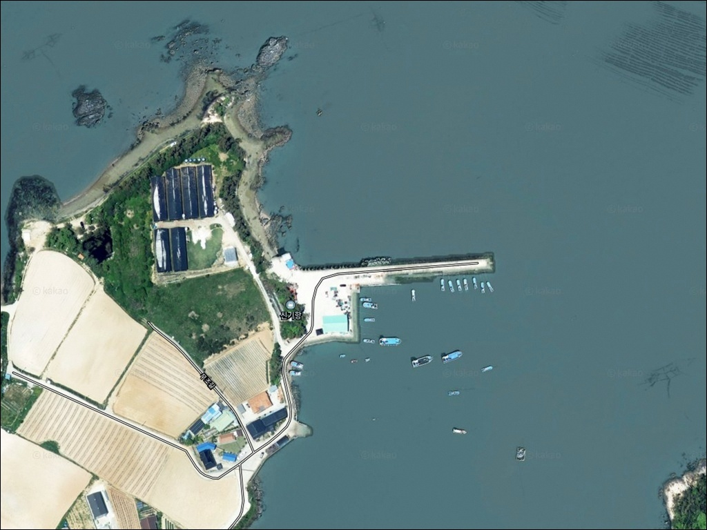
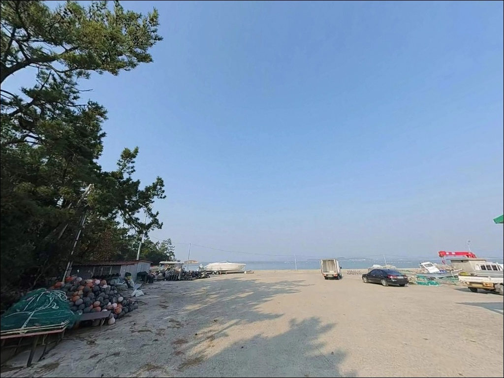
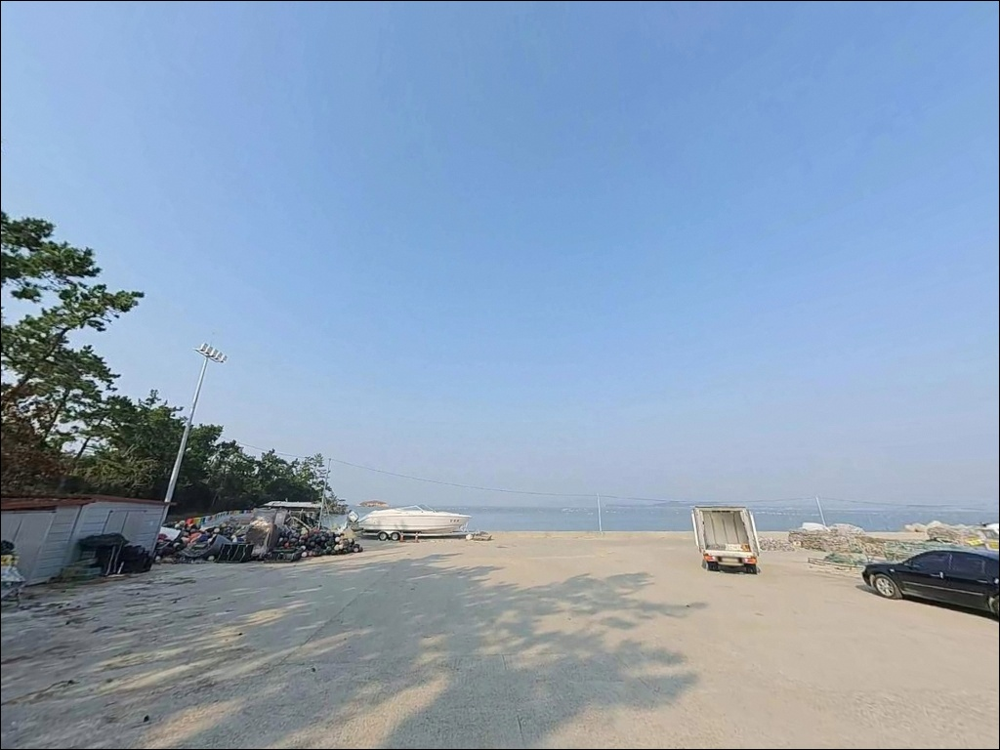
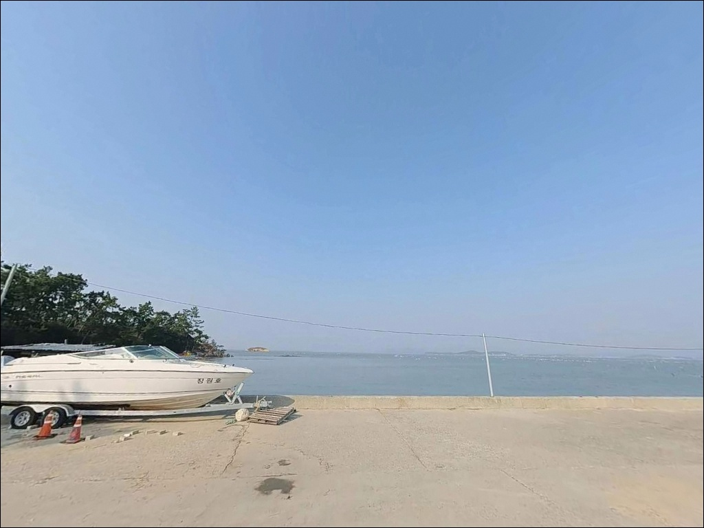
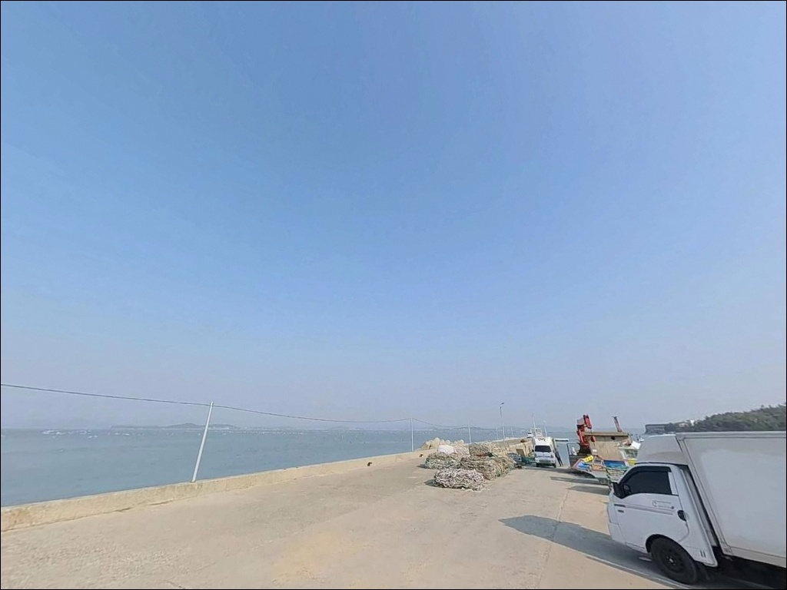
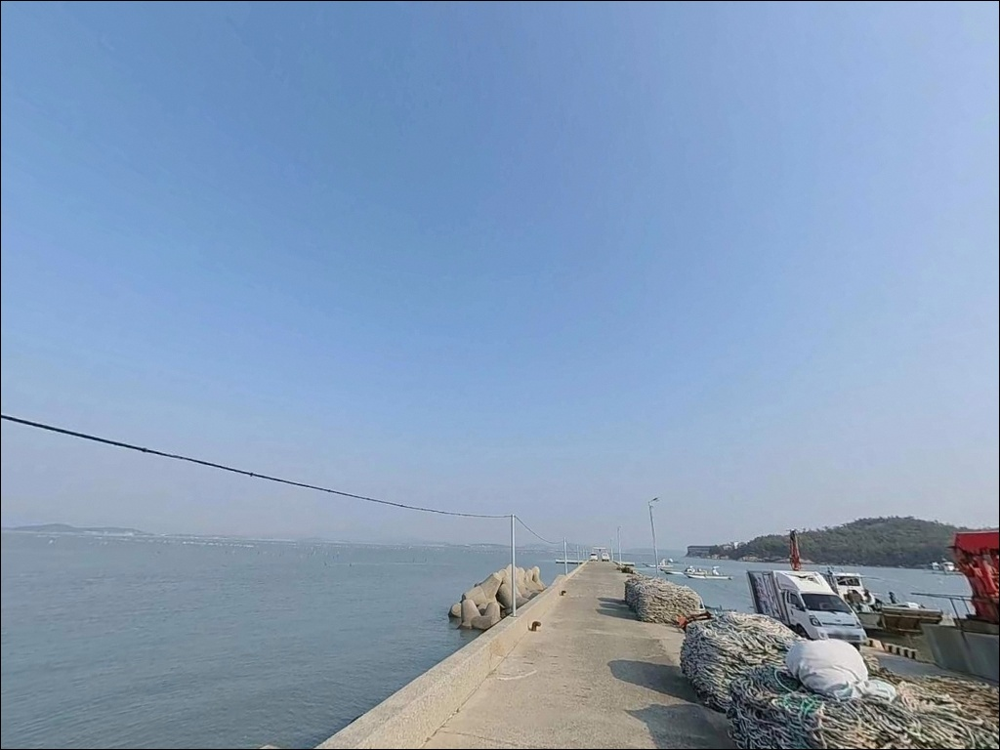
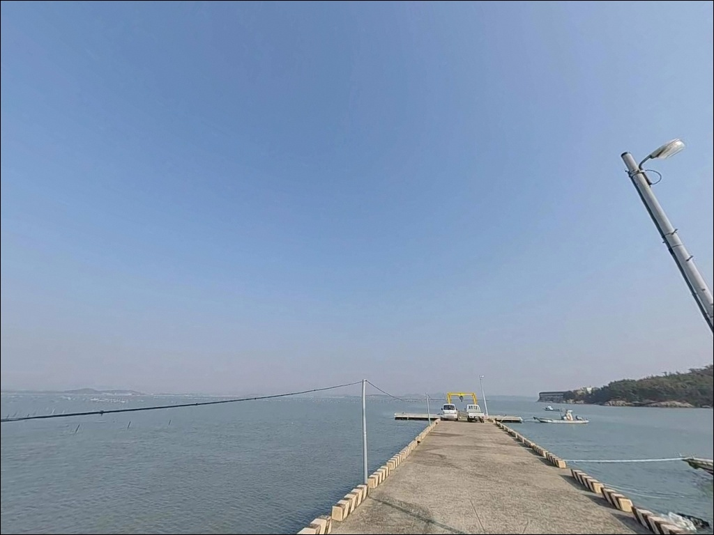
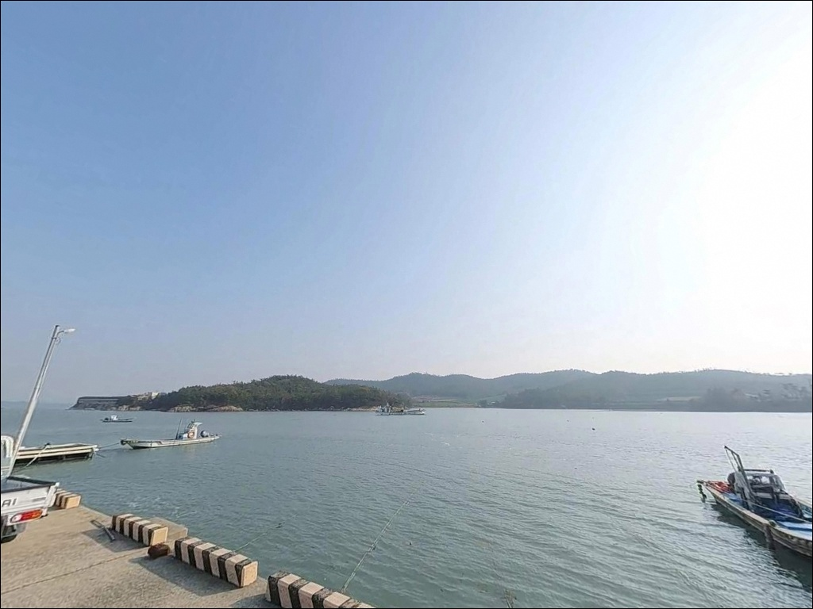
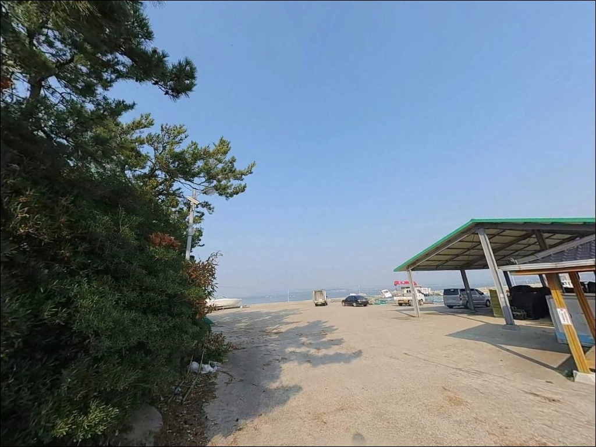

신기항, 진도 전남 진도군 자연 그대로의 분위기에서 차박, 낚시를 즐기기 좋은 포인트


포인트 안내
신기항
전남 진도군 군내면 나리 397-1
물때 확인 없이 신기항에 들어서면,
명량해협 영향권의 강한 조류 때문에
어떤 채비를 써도 바닥까지 제대로 내리기가 어렵습니다.
조류가 살아 있는 타이밍을 벗어나면
방파제 끝단에 서 있어도
낚시 여건 자체가 닫혀버리는 구조입니다.
이 글은 신기항의 지형 여건과 진입 환경,
물때 판단 기준, 낚시 방식별 공략 조건,
차박 체류 여건에 집중합니다.
조황 단정이나 특정 어종 보장은
이 글의 범위에 포함되지 않습니다.

1. 진입 동선과 포인트 접근성
신기항은 진도대교를 건너 군내면 해안도로를 따라
나리 방향으로 진입하는 구조입니다.
진도 본도 북부에 자리한 마을길을 경유하므로
도로 폭이 넓지 않은 구간이 포함되어 있습니다.
소형~중형 차량이 접근하기 무난한 수준이며,
대형 SUV나 캠핑카는 출발 전
위성지도로 진입로를 반드시 확인하는 편이 좋습니다.
주차 후보는 선착장 입구 인근 공터와
방파제 기슭 쪽입니다.
소규모 어항 특성상 공간이 넉넉하지 않으며,
어선 접안 동선을 막지 않는 자리를
먼저 확인하고 주차하는 것이 기본입니다.
회차 공간도 여유롭지 않으므로
초행 방문이라면 진입 전에
현장 구조를 미리 파악해 두는 것이
헛걸음을 막는 조건입니다.
진입로가 좁은 소규모 어항에서는
출발 전 위성지도 확인이 방문 성패를 가릅니다.

2. 차박 환경과 야간 체류 여건
신기항 일대는 소규모 어촌 마을 구조로,
야간에는 차량 통행이 거의 없는 조용한 환경입니다.
민가 밀집도가 낮아 프라이버시는 상대적으로 나쁘지 않은 편이며,
낚시를 마친 뒤 조용히 하룻밤 머무는 용도로는
소박하게 가능한 수준입니다.
가로등 밀도가 낮은 어촌 환경이므로
개인 조명 장비는 반드시 준비해야 합니다.
외항 방향 노출 구조에 따라
바람과 파도 영향이 달라질 수 있어,
기상 예보 확인을 당일 출발 전에도
한 번 더 하는 것이 기본입니다.
차박이란 차량을 숙박 공간으로 활용하며
현장에서 하룻밤 머무는 여행 방식입니다.
주차 공간이 어선 접안면과 겹치지 않도록
자리를 잡아야 하는 점을 감안하면,
차박을 메인 목적으로 삼기보다는
낚시 후 체류 보조 개념으로
접근하는 것이 현실적입니다.


3. 주변 편의시설 및 인프라 현황
신기항 반경 3km 이내에서
편의점이나 마트 등의 편의시설은
기대하기 어렵습니다.
소규모 어촌 마을 환경이라
완전 자급 체제로 진입하는 것이 현실적입니다.
식수, 얼음, 낚시 소품, 비상약품, 연료는
출발 전에 모두 준비해야 합니다.
진도읍 방향으로 약 10~15km를 이동하면
생활 인프라 전반을 이용할 수 있습니다.
부족한 소품이 생기면
진도읍 동선을 미리 파악해 두는 편이 효율적이며,
응급 상황을 대비한
비상약품과 연료 여유분은
출발 단계에서 갖추는 것이 기본입니다.

4. 방문 전 반드시 챙겨야 할 준비사항
신기항 방문에서 가장 먼저 확인할 것은
물때입니다.
바다타임에서 나리 기준 물때를 확인할 수 있으며,
나리는 독립 물때 지점으로 분류될 만큼
이 일대 조류 환경이 독자적인 패턴을 가진 해역입니다.
조금 전후 또는 만조·간조 전후 타이밍을
목표로 출발 시각을 맞추는 것이 기본 전략입니다.
물때란 밀물과 썰물이 교차하는 조류의 주기로,
낚시 포인트별로 최적 입장 타이밍이
달라지는 기준입니다.
명량해협 영향권에 위치한 만큼
사리 전후에는 조류가 세져
채비 컨트롤 자체가 어려워지는 수준까지 올라옵니다.
방파제 및 테트라포드 구간에서는
발판이 불안정한 구간이 있을 수 있으므로
구명조끼는 반드시 착용해야 합니다.
어선 조업 동선과 겹치지 않도록 자리를 잡는 것이
기본 매너이며,
여분 채비도 넉넉하게 준비하는 편이
현장 손실에 대비하는 현실적인 방법입니다.

5. 방파제 끝단 조류가 달라지는 조건 — 지형 기반 낚시 여건 분석
신기항은 방파제와 선착장이 결합된 소규모 어항 구조입니다.
명량해협(울돌목)이 북동 방향으로
약 3~4km 거리에 위치하며,
나리 해안은 이 수로에서 완충된 형태로
조류 영향을 받는 구조입니다.
직접 노출보다는 약화된 흐름이지만,
방파제 끝단과 외항 방향에는
조류 변화가 뚜렷하게 살아 있는 편입니다.
선착장 끝단 기준 수심은 3~5m 안팎으로 추정되며,
방파제 외항 방향으로 나갈수록
수심 변화가 생기는 구간이 형성됩니다.
바닥은 사질과 잔돌이 혼합된 구조일 가능성이 있어,
원투 채비를 멀리 보냈을 때
밑걸림이 적은 구간을 먼저 탐색하는 방식이
유효합니다.
나리 일대는 바다타임에 독립 물때 지점으로
분리 등재된 해역으로,
이 구역 조류 흐름이 독자적인 패턴을 보이는
지형이라는 점을
출조 전 판단에 참고하는 것이 좋습니다.
방파제 끝단은 조류 변화가 살아 있어
낚시 여건이 활성화되는 핵심 자리입니다.
최신 조황은 출조 전에 반드시 검색해 보시기 바랍니다.


6. 포인트 지형에 어울리는 낚시 스타일
이 포인트에서 지형 조건에 가장 잘 맞는 방식은
원투낚시입니다.
방파제 끝단과 외항 방향은
수심 변화와 조류 흐름이 맞물리는 구간으로,
바닥층을 노리는 원투 채비에 적합한 구조입니다.
7~8월 여름 시즌에는 진도권 방파제 해역에서
민어를 기대해 볼 수 있는 낚시 방식이기도 합니다.
찌낚시도 이 포인트에 어울리는 방식입니다.
선착장 내항 쪽 수면이 상대적으로 잔잔한 구간에서는
조류 흐름을 타는 찌채비로
감성돔이나 숭어를 노려볼 수 있는 여건이
갖춰지는 편입니다.
진도권 방파제 전반에서 감성돔과 숭어는
봄부터 가을까지 기대해 볼 수 있는 어종입니다.
루어낚시는 방파제 끝단과 테트라포드 주변을
중심으로 시도해 볼 만합니다.
농어나 볼락류가 서식하기 좋은 지형 조건이며,
야간에는 소형 지그헤드를 활용한
볼락 라이트게임이 이 구조에 어울리는 방식입니다.
가을 시즌이라면 갑오징어를 대상으로 한 에깅도
이 해역에서 기대해 볼 수 있는 스타일에 해당합니다.

7. 대안 포인트와 플랜 B 동선
신기항 조류가 너무 강하거나
주차 여건이 여의치 않을 때는
군내방조제 방파제가 가장 가까운 대안입니다.
동일한 해역 패턴 안에 있어
조류 타이밍 계산을 공유할 수 있으며,
방파제 규모가 신기항보다
공간 여유가 있는 편입니다.
진도 고군면 방향으로 이동하면
용호방파제를 만날 수 있습니다.
진도 일대에서 여름 시즌 민어 원투낚시의
대표 참고 포인트로 알려진 곳으로,
신기항을 먼저 들른 뒤
용호방파제를 병행 탐색하는 동선이
이 권역에서 효율적입니다.
쉬미항은 진도 북부권에서
들물 타임에 조과가 활성화되는 포인트로
알려져 있습니다.
신기항에서 조류 타이밍이 맞지 않을 때
이동 대안으로 함께 파악해 두면
출조 동선을 탄력적으로 운용할 수 있습니다.

물때 한 번 맞추면
신기항이 달라 보입니다
원투낚시나 찌낚시를 중심으로 운용하는 낚시인이라면
신기항의 방파제 끝단 구조와 조류 흐름은
잘 맞는 조건입니다.
여름 시즌 민어 원투를 노리거나
감성돔·볼락류를 복합으로 공략할 때,
물때 판단 하나만 제대로 갖추면
기대에 응하는 포인트입니다.
반면 편의시설을 기대하거나
조류 상관없이 자리를 잡으려는 분이라면
다소 불편한 조건입니다.
자급 준비 없이 방문하면
작은 불편이 쌓여 출조 자체를 흐트러뜨릴 수 있습니다.
물때 확인, 자급 준비, 진입로 사전 파악,
이 세 가지를 갖추고 간다면
조용한 포인트에서 낚시와 차박을
함께 즐길 수 있는 출조가 됩니다.